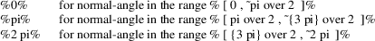

XDrawArc, XDrawArcs, XArc − draw arcs and arc structure
|
int XDrawArc(Display *display, Drawable d, GC gc, int x, int y, unsigned int width, unsigned int height, int angle1, int angle2); | |
|
int XDrawArcs(Display *display, Drawable d, GC gc, XArc *arcs, int narcs); |
XDrawArc draws a single circular or elliptical arc, and XDrawArcs draws multiple circular or elliptical arcs. Each arc is specified by a rectangle and two angles. The center of the circle or ellipse is the center of the rectangle, and the major and minor axes are specified by the width and height. Positive angles indicate counterclockwise motion, and negative angles indicate clockwise motion. If the magnitude of angle2 is greater than 360 degrees, XDrawArc or XDrawArcs truncates it to 360 degrees.
For an arc specified as %[ ~x, ~y, ~width , ~height, ~angle1, ~angle2 ]%, the origin of the major and minor axes is at % [ x +^ {width over 2} , ~y +^ {height over 2} ]%, and the infinitely thin path describing the entire circle or ellipse intersects the horizontal axis at % [ x, ~y +^ {height over 2} ]% and % [ x +^ width , ~y +^ { height over 2 }] % and intersects the vertical axis at % [ x +^ { width over 2 } , ~y ]% and % [ x +^ { width over 2 }, ~y +^ height ]%. These coordinates can be fractional and so are not truncated to discrete coordinates. The path should be defined by the ideal mathematical path. For a wide line with line-width lw, the bounding outlines for filling are given by the two infinitely thin paths consisting of all points whose perpendicular distance from the path of the circle/ellipse is equal to lw/2 (which may be a fractional value). The cap-style and join-style are applied the same as for a line corresponding to the tangent of the circle/ellipse at the endpoint.
For an arc specified as % [ ~x, ~y, ~width, ~height, ~angle1, ~angle2 ]%, the angles must be specified in the effectively skewed coordinate system of the ellipse (for a circle, the angles and coordinate systems are identical). The relationship between these angles and angles expressed in the normal coordinate system of the screen (as measured with a protractor) is as follows:
% roman
"skewed-angle" ~ = ~ atan left ( tan ( roman
"normal-angle" )
* width over height right ) +^ adjust%
The skewed-angle and normal-angle are expressed in radians (rather than in degrees scaled by 64) in the range % [ 0 , ~2 pi ]% and where atan returns a value in the range % [ - pi over 2 , ~pi over 2 ] % and adjust is:

For any given arc, XDrawArc and XDrawArcs do not draw a pixel more than once. If two arcs join correctly and if the line-width is greater than zero and the arcs intersect, XDrawArc and XDrawArcs do not draw a pixel more than once. Otherwise, the intersecting pixels of intersecting arcs are drawn multiple times. Specifying an arc with one endpoint and a clockwise extent draws the same pixels as specifying the other endpoint and an equivalent counterclockwise extent, except as it affects joins.
If the last point in one arc coincides with the first point in the following arc, the two arcs will join correctly. If the first point in the first arc coincides with the last point in the last arc, the two arcs will join correctly. By specifying one axis to be zero, a horizontal or vertical line can be drawn. Angles are computed based solely on the coordinate system and ignore the aspect ratio.
Both functions use these GC components: function, plane-mask, line-width, line-style, cap-style, join-style, fill-style, subwindow-mode, clip-x-origin, clip-y-origin, and clip-mask. They also use these GC mode-dependent components: foreground, background, tile, stipple, tile-stipple-x-origin, tile-stipple-y-origin, dash-offset, and dash-list.
XDrawArc and XDrawArcs can generate BadDrawable, BadGC, and BadMatch errors.
The XArc structure contains:
typedef struct {
|
short x, y; | |
|
unsigned short width, height; | |
|
short angle1, angle2; /* Degrees * 64 */ |
} XArc;
All x and y members are signed integers. The width and height members are 16-bit unsigned integers. You should be careful not to generate coordinates and sizes out of the 16-bit ranges, because the protocol only has 16-bit fields for these values.
BadDrawable
A value for a Drawable argument does not name a defined Window or Pixmap.
|
BadGC |
A value for a GContext argument does not name a defined GContext. | ||
|
BadMatch |
An InputOnly window is used as a Drawable. | ||
|
BadMatch |
Some argument or pair of arguments has the correct type and range but fails to match in some other way required by the request. |
XDrawLine(3),
XDrawPoint(3), XDrawRectangle(3)
Xlib − C Language X Interface